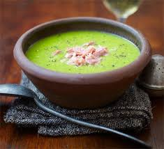

Pea & Ham Soup
Home
Pea and ham soup is a hearty and comforting dish made with split peas, ham, and vegetables. It is a popular dish in many cultures and is often enjoyed during the colder months.
Ingredients
- 250g split peas, rinsed
- 200g ham hock or diced ham
- 1 onion, chopped
- 2 carrots, diced
- 2 celery stalks, diced
- 2 cloves garlic, minced
- 1 liter chicken or vegetable stock
- Salt and pepper to taste
- Fresh parsley for garnish
Instructions
- In a large pot, combine the split peas, ham, onion, carrots, celery, and garlic.
- Add the stock and bring to a boil.
- Reduce heat and simmer for 1-2 hours until the peas are soft.
- Season with salt and pepper to taste.
- Blend the soup until smooth if desired.
- Serve hot, garnished with fresh parsley.

Related Recipes
Check out these other delicious recipes: